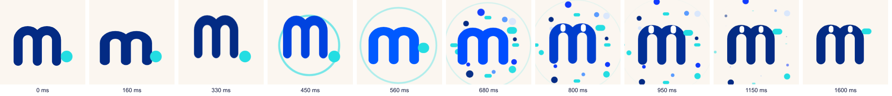

The live mascot made from the Myna Health icon (lengkung m, variant "Paruh"): eyes on the arches, and the logo's cyan dot flies up to become a small pill beak. Her name is Mina (from myna; chosen by Erdi). The web component is <myna-buddy>. The still icon stays the brand mark; the buddy only appears in live moments. One file, no dependencies: lab/brand/myna-buddy.js.
Frame 0 is the still icon, pixel for pixel. Then: an anticipation squash, a leap with squash and stretch, a flash and a cyan shock ring, confetti in brand colours from behind the mark. The dot flies up and becomes the beak, the eyes pop open with overshoot, and it lands. About 1.5 s.
Left: logo-mark.svg as an image. Right: the buddy before it transforms. They must look identical.

Six states, one API (state attribute). gagal is gentle on purpose: calm, lowered eyes and a small head tilt, never a frown. semangat is for coming back after a missed day.
Transformation, then kerja while it saves, then sukses, or the gentle gagal when it fails.
Siap.
Tap or click: boing (happy eyes), wiggle (wink), spin (happy eyes), wow (round eyes), in turn. Five quick taps make it dizzy (X eyes, a double spin). Every tap pops 8 small particles, shows a short bubble (below it when it sits near the top of the screen) and vibrates 12 ms on phones.
| Reaction | Bubble (id) | Bubble (en) |
|---|---|---|
| boing | Hehe, hai! | Hehe, hi! |
| wiggle | Geli, ah! | That tickles! |
| spin | Wiii! | Wheee! |
| wow | Eh, halo! | Oh, hello! |
| dizzy | Pusing… pelan-pelan, ya | So dizzy… easy now |
Minimum 24 px; below that use the still icon. Under 64 px the m fills its box and the eyes are drawn bigger, so the face survives. On dark grounds set --myna-ink:#fff; --myna-face:#032b84.
This bar uses the still icon. After 5 seconds of visible time it turns into the buddy in place and stays alive for this page view. Tap it: it reacts, and the logo link does not navigate.
| Place | What the buddy does | Size |
|---|---|---|
| Every mynahealth.id page, navbar | The still icon awakens after 5 s; tap to poke | Icon about 30 × 20 px → buddy box about 32 px (under 64 px the m fills its box) |
| Loading in Myna Fit / Myna Food web views | Transformation → kerja → sukses → fades into the app | 96–140 px, centred |
| Habit done, streak kept, meal logged | sukses with "Mantap, tercatat!" | 44–64 px next to the confirmation |
| Missed a day, welcome back | semangat with "Senang ketemu lagi! Mulai dari langkah kecil." | 64–96 px |
| Errors and empty states | Gentle gagal with "Tidak apa-apa, coba lagi, ya." | 64–96 px above the message |
| Content | Myna Health's own social accounts only | Rendered stills or short clips |
gagal and semangat to reassure: missing a day is fine.